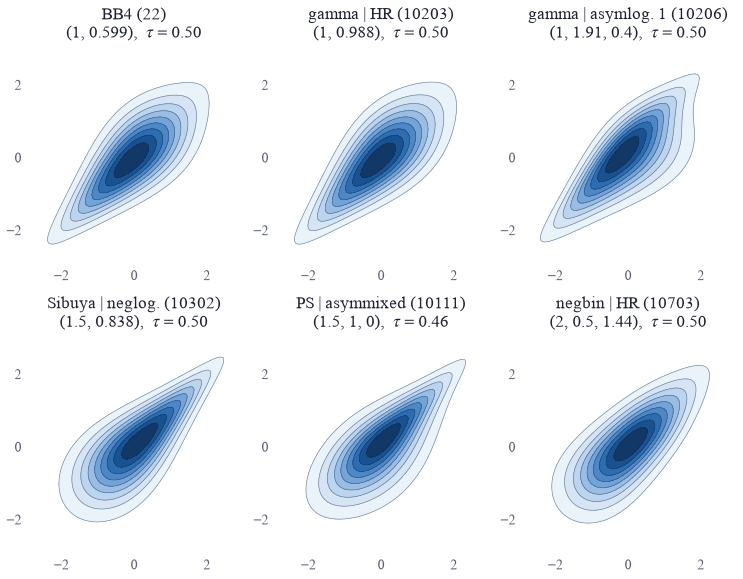

Archimax families¶
Archimax copulas (Capéraà, Fougères & Genest 2000) join the two previous constructions. An Archimedean generator \(\psi\) (with inverse \(\varphi\)) supplies the body and the lower tail, an extreme-value Pickands function \(A\) supplies the shape of the upper tail and, if wanted, asymmetry:
The two special cases are the familiar ones. With \(A \equiv 1\), \(\ell(s, t) = s + t\) and \(C\) is
Archimedean; with \(\psi(s) = e^{-s}\), \(\varphi(u) = -\log u\) and \(C\) is an extreme-value copula.
In fortvine the generator is any of the Laplace transforms
(or a composition of two) and \(A\) is any of the
Pickands functions; one formula in
src/families_gen.inc evaluates them all.

Archimax copulas at Kendall's \(\tau \approx 0.5\). BB4 and gamma–Hüsler–Reiss (left two) are exchangeable with both tails; gamma with the asymmetric logistic type 1 (top right) adds asymmetry to both-tail dependence.
Formulas¶
With \(S = \varphi(u)\), \(T = \varphi(v)\), \(w = T/(S + T)\) and \(L = \ell(S, T)\), the partial derivatives of \(\ell\) are
and the density and h-functions are
Both terms of the density numerator are non-negative, and fortvine adds them in log space. The Pickands argument \(w\) is computed from \(\log S\) and \(\log T\), so it stays exact even when \(S\) and \(T\) differ by many orders of magnitude.
Kendall's tau separates into the two ingredients (Capéraà, Fougères & Genest 2000):
where \(\tau_A = \int_0^1 w(1-w) A''(w)/A(w)\, dw\) is the tau of the EV copula with Pickands function \(A\), and \(\tau_\psi\) is the tau of the Archimedean copula with generator \(\psi\). The formula was checked with fortvine's own quadrature: gamma generator \(\theta = 1\) (\(\tau_\psi = 1/3\)) with Hüsler–Reiss \(\lambda = 2\) (\(\tau_A = 0.5387\)) gives \(0.6925\) both ways.
Tail dependence combines the midpoint value \(A(1/2)\) with the end behaviour of \(\psi\) used on the Archimedean page. If \(1 - \psi(s)\) behaves like \(s^{1/m}\) at zero (\(m = 1\) when \(\psi'(0)\) is finite) and \(\psi(s)\) like \(s^{-1/k}\) at infinity, then
and \(\lambda_L = 0\) when \(\psi\) decays faster than any power. For the generators in fortvine:
| outer generator | \(m\) (upper tail) | \(k\) (lower tail) |
|---|---|---|
| positive stable (\(\theta\)) | \(\theta\) | none (\(\lambda_L = 0\)) |
| gamma (\(\theta\)) | 1 | \(\theta\) |
| Sibuya (\(\theta\)) | \(\theta\) | none |
| log series, tilted PS, generalised Sibuya (\(\delta < 1\)), negative binomial | 1 | none |
| PS.Sibuya (\(\theta, \delta\)) | \(\theta\delta\) | none |
| gamma.PS (\(\theta, \delta\)) | \(\delta\) | \(\theta\delta\) |
| gamma.Sibuya (\(\theta, \delta\)) | \(\delta\) | \(\theta\) |
| gamma.logseries (\(\theta, \delta\)) | 1 | \(\theta\) |
| Sibuya.PS (\(\theta, \delta\)) | \(\theta\delta\) | none |
| logseries.PS, logseries.Sibuya (\(\theta, \delta\)) | \(\delta\) | none |
So an Archimax copula has lower-tail dependence exactly when its generator contains the gamma transform as the outer part, and with \(m = 1\) its upper tail coefficient equals that of the Pickands function alone, \(2 - 2A(1/2)\). These values were confirmed numerically for one member of each row.
Symmetry and rotations. The generator is symmetric, so an Archimax copula is exchangeable exactly when \(A\) is (\(A(w) = A(1 - w)\), i.e. Pickands codes 1 to 4). A vine edge flip transposes the inner Pickands function as described on the extreme-value page. All Archimax codes accept the 90°, 180° and 270° rotations.
Parameter order. Outer generator parameters first (one or two), then the Pickands parameters, at most three in total. Hence a two-parameter generator can only be combined with a one-parameter Pickands function (codes 1–4).
Named members¶
Several classical two-parameter families are Archimax copulas. fortvine keeps the hand-coded versions and marks the generic codes as duplicates:
| Family | Generator | Pickands function | Hand code | Generic code |
|---|---|---|---|---|
| BB1 | gamma | logistic | 7 | 10201 |
| BB4 | gamma | negative logistic | 22 | 10202 |
| BB5 | positive stable | negative logistic | 19 | 10102 |
| BB6 | Sibuya | logistic | 8 | 10301 |
| logseries.PS | log series | logistic | — | 10401 (= 12300) |
| Gumbel | positive stable | logistic | 4 | (rejected) |
The last two rows illustrate a general rule: combining any generator with the logistic Pickands function gives the Archimedean copula of the composition "generator stopped positive stable", because \(\psi\big((S^\delta + T^\delta)^{1/\delta}\big)\) is Archimedean with generator \(s \mapsto \psi(s^{1/\delta})\).
BB4¶
| Property | Value |
|---|---|
| Code | 22 (FV_BB4); generic 10202 |
| Parameters, box | \(\theta \in [0.01, 15]\) (gamma), \(\delta \in [0.01, 15]\) (negative logistic) |
| Kendall's \(\tau\) | \(\tau_{\text{Galambos}}(\delta) + \big(1 - \tau_{\text{Galambos}}(\delta)\big)\, \frac{\theta}{\theta + 2}\); \(\tau \in [0, 0.992]\) in the box |
| \(\lambda_L\), \(\lambda_U\) | \(\left(2 - 2^{-1/\delta}\right)^{-1/\theta}\), \(2^{-1/\delta}\) |
| Exchangeable | yes |
| Rotations | 90, 180, 270 |
BB4 (Joe & Hu 1996) has both tails, each with its own parameter. With \(x = u^{-\theta} - 1\), \(y = v^{-\theta} - 1\), \(S = (x^{-\delta} + y^{-\delta})^{-1/\delta}\), \(W = 1 + x + y - S\) and \(p = (S/x)^{\delta+1}\), \(q = (S/y)^{\delta+1}\) (both below one):
For BB1, BB5 and BB6 see the Archimedean and extreme-value pages.
The 67 new Archimax codes¶
The code is 10000 + 100 og + ie with og the generator and ie the Pickands function. The
table lists every code that fv_generic_families() returns; "—" marks a combination that is
either a duplicate (see above) or not allowed.
Pickands columns: lg logistic (1), nl negative logistic (2), HR Hüsler–Reiss (3), mx symmetric mixed (4), al1/al2 asymmetric logistic types 1/2 (6/7), anl1/anl2 asymmetric negative logistic types 1/2 (9/10), amx asymmetric mixed (11).
One-parameter generators (3 parameters with a two-parameter Pickands function):
generator (og) |
lg | nl | HR | mx | al1 | al2 | anl1 | anl2 | amx |
|---|---|---|---|---|---|---|---|---|---|
| positive stable (1) | — | — | 10103 |
10104 |
10106 |
10107 |
10109 |
10110 |
10111 |
| gamma (2) | — | — | 10203 |
10204 |
10206 |
10207 |
10209 |
10210 |
10211 |
| Sibuya (3) | — | 10302 |
10303 |
10304 |
10306 |
10307 |
10309 |
10310 |
10311 |
| log series (4) | — | 10402 |
10403 |
10404 |
10406 |
10407 |
10409 |
10410 |
10411 |
Two-parameter generators (only the one-parameter Pickands functions fit in three parameters):
generator (og) |
lg | nl | HR | mx |
|---|---|---|---|---|
| tilted positive stable (5) | 10501 |
10502 |
10503 |
10504 |
| generalised Sibuya (6) | 10601 |
10602 |
10603 |
10604 |
| negative binomial (7) | 10701 |
10702 |
10703 |
10704 |
| PS.Sibuya (13) | 11301 |
11302 |
11303 |
11304 |
| gamma.PS (15) | — | 11502 |
11503 |
11504 |
| gamma.Sibuya (17) | 11701 |
11702 |
11703 |
11704 |
| gamma.logseries (18) | 11801 |
11802 |
11803 |
11804 |
| Sibuya.PS (19) | — | 11902 |
11903 |
11904 |
| logseries.PS (23) | — | 12302 |
12303 |
12304 |
| logseries.Sibuya (25) | 12501 |
12502 |
12503 |
12504 |
That is \(7 + 7 + 8 + 8 = 30\) codes with one-parameter generators and \(10 \times 4 - 3 = 37\) with two-parameter generators. Parameter boxes are those of the parts: generator boxes as on the Archimedean page, Pickands boxes as on the extreme-value page; the catalogue lists each code's box.
Reading the table by tails:
- Row positive stable — these are all extreme-value copulas (see positive stable Archimax): upper tail only, \(\lambda_U = 2 - (2A(1/2))^{1/\theta}\).
- Rows gamma, gamma.PS, gamma.Sibuya, gamma.logseries — dependence in both tails. With an
asymmetric Pickands function (
10206to10211) these are the only non-exchangeable families in fortvine with lower and upper tail dependence. - All other rows — upper tail only, of the Pickands function's strength (\(m = 1\)) or stronger (\(m > 1\) for Sibuya, PS.Sibuya, Sibuya.PS, logseries.PS, logseries.Sibuya).
Three combinations are reparametrisations of two-parameter families
By the logistic rule above, a generator that already ends in a positive stable inner part
absorbs the logistic exponent: 11501 (gamma.PS with logistic) is BB1\((\theta, \delta\theta_\ell)\),
11901 (Sibuya.PS with logistic) is BB6\((\theta, \delta\theta_\ell)\) and 12301
(logseries.PS with logistic) is 12300\((\theta, \delta\theta_\ell)\), where \(\theta_\ell\) is
the logistic parameter. Only the product \(\delta\theta_\ell\) is identified, so these three
codes add a flat direction to the likelihood without adding any shape; their densities agree
with the two-parameter families to machine precision. gen_dup therefore marks them as
duplicates: they remain valid codes for cross-checks but are not returned by
fv_generic_families().
Excluded combinations¶
- A logistic inner with a one-parameter generator duplicates a hand-coded or Archimedean
code (BB1, BB6,
12300), and positive stable with logistic is Gumbel itself. - Three-parameter Pickands functions (asymmetric logistic 5, asymmetric negative logistic 8, Khoudraji–Hüsler–Reiss 12, Khoudraji–mixed 13) would need four or more parameters with any generator; fortvine stores at most three per pair copula. The one-weight types 6/7 and 9/10 carry the asymmetry instead.
- Generators with a gamma inner part (BB3-type
og 12, BB2-typeog 16, BB7-typeog 20and logseries.gammaog 24) are not combined with any Pickands function: such combinations did not pass fortvine's numerical consistency tests (gen_validrejects them). They remain available as Archimedean copulas. - The generators excluded on the Archimedean page (PS.PS, Sibuya.Sibuya and the log-series inner compositions) are excluded here as well.
References¶
- Capéraà, P., Fougères, A.-L. and Genest, C. (2000). Bivariate distributions with given extreme value attractor. Journal of Multivariate Analysis 72, 30–49.
- Joe, H. and Hu, T. (1996). Multivariate distributions from mixtures of max-infinitely divisible distributions. Journal of Multivariate Analysis 57, 240–265.
- Joe, H. (2014). Dependence Modeling with Copulas. Chapman & Hall/CRC, §3.18.